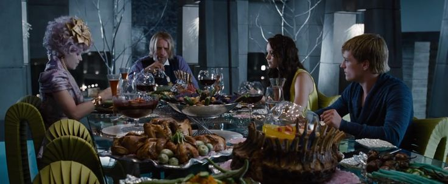

-
Estudios de Grabación
-
Lionsgate Films
-
Color Force
-
Curiosidades sobre el Rodaje
-
Rodaje en locaciones reales. Gran parte de la película se filmó en exteriores reales de Carolina del Norte, lo que le dio un aspecto más natural y auténtico.
-
Los efectos de fuego fueron en su mayoría digitales. Aunque se usaron en ciertos momentos fuego real, en su mayor parte se utilizaron efectos especiales para dar más calidad y además el rodaje se realizó en el exterior por lo tanto no querían ocasionar incendios. La escena de Katniss y Peeta con sus trajes en llamas durante la ceremonia de apertura fueron hechas con CGI
-
Jennifer Lawrence sufrió una lesión durante el rodaje. Durante una de las primeras semanas de filmación, Jennifer se golpeó fuertemente el abdomen al chocar con una pared mientras corría en una escena de acción. Afortunadamente no fue grave.
-
Rodaje secreto y nombre falso. Para evitar la atención de la prensa y fanáticos durante el rodaje, la producción usó el nombre falso "Artemis", inspirado en la diosa griega de la caza.
-
Uso de cámara en mano y estilo documental El director Gary Ross optó por una cámara en mano con estilo semi-documental durante las escenas del Distrito 12 y los Juegos, para hacer que el espectador se sintiera “dentro” de la acción. Esto causó que algunas personas experimentaran mareos leves en cines por el movimiento de cámara.
-
Los colores fueron diseñados para reflejar el contraste social El Distrito 12 se filmó con colores apagados y tonos tierra, mientras que el Capitolio se presentó con colores brillantes, luces frías y diseños extravagantes, resaltando la opulencia y desconexión social.
-
La comida del Capitolio fue diseñada por chefs reales Para las escenas en el Capitolio, se contrató a chefs y estilistas culinarios para preparar platillos visualmente impresionantes, reflejando la excesiva abundancia frente a la pobreza de los distritos.
 -
Curiosidades Generales
- Había un tarro de malas palabras en el set. El coguionista y director Gary Ross dijo que la mitad fue aportada por Jennifer Lawrence .
- Mientras jugaba en el set, Jennifer Lawrence pateó accidentalmente a Josh Hutcherson en la cabeza, dejándolo inconsciente y provocándole una conmoción cerebral.
- Jennifer Lawrence recibió la elevada suma de 500.000 dólares. Tardó tres días en aceptar el papel, pues no estaba segura de cómo afectaría a su carrera, dado que su trayectoria se centraba principalmente en el cine independiente.
- Donald Sutherland vio el guion por casualidad y, tras leerlo, abogó por el papel del presidente Snow porque le recordaba a Senderos de gloria (1957) de Stanley Kubrick . Escribió una carta de súplica al director Gary Ross , explicándole el significado del personaje de Snow para la narrativa y por qué debía ser elegido. Funcionó, y Ross quedó tan impresionado por las ideas de Sutherland que incluyó dos escenas en el guion basándose en lo que Sutherland había escrito.
- Durante una entrevista con la revista New York Magazine, Wes Bentley comentó que la inusual barba que lucía como Seneca se había diseñado a partir de su barba natural, no de mechones ni pelos extra.
- Dado que los libros están escritos exclusivamente desde la perspectiva de Katniss Everdeen, Seneca Crane nunca apareció en el primer libro, ya que Katniss nunca conoce al Director del Juego. Las escenas con Crane y sus interacciones con el Presidente Snow (quien también aparece esporádicamente en el libro) fueron concebidas para la película. Aun así, Crane no es un personaje inventado, ya que se le menciona retrospectivamente en el segundo libro cuando Snow le explica a Katniss que mandó matar a Crane por no conseguir el ganador único que tradicionalmente exigen los juegos.
- En el libro, hay tantos "perros" en la cornucopia como tributos caídos. Además, llevan collares con sus números de distrito, sus ojos son humanos y su pelaje es del color del pelo del tributo caído que cada uno representa. El libro deja claro que estos son los restos mutados y reanimados de los tributos caídos.
- La canción de cuna de Katniss a una Rue moribunda fue compuesta por T Bone Burnett , basada en la letra de la novela de la autora Suzanne Collins .
- Alrededor de una hora y catorce minutos. Antes de revelar que Peeta está con los profesionales, un mapa de la arena muestra la ubicación de todos los tributos supervivientes. En el mapa, Peeta está con los profesionales.
- Recomendada por la autora de 'Crepúsculo': La saga de "Los juegos del hambre" es seguida por millones de lectores, algunos de ellos célebres. Entre ellos, hay grandes nombres de la literatura popular americana, como Stephen King o Stephanie Meyer. Esta última, autora de la saga 'Crepúsculo', no dejó de recomendar la trilogía de Susana Collins, que cualificó como un nuevo fenómeno editorial: "La historia me mantuvo despierta durante varias noche, porque hasta después de haber acabado de leer, me quedaba tirada en mi cama sin podérmelo creer".
-
Premios
Tuvo el rol de ser la productora y distribuidora principal de toda la saga. Ya que, en 2009, adquirió los derechos cinematográficos de las novelas de Suzanne Collins. Se encargó de financiar, producir y destruir toda la saga a nivel global. Es también el estudio detrás de las secuelas En Llamas, Sinsajo Parte 1 y 2, Balada de Pájaros Cantores y Serpientes y Amanecer en la cosecha.
Fue una productora que inicialmente compro los derechos de las novelas. Pero Nina Jacobson fundadora de Color Force, convenció a Lionsgate de unirse al proyecto y fue productora en toda la saga. También, se mantiene en las siguientes películas.
| Persona | Categoria | Resultado | Fecha | Evento |
|---|---|---|---|---|
| James Newton Howard | Las mejores películas de taquilla | Ganador | 20 de junio de 2013 | Premios de Música de Cine y Televisión de la ASCAP |
| Debra Zane y Jackie Burch | Largometraje de gran presupuesto, Drama | Nominado | 10 de enero de 2013 | Premios Artios |
| Amandla Stenberg | Mejor interpretación revelación | Nominado | 7 de febrero de 2013 | Premios Black Reel |
| Gary Ross, Nina Jacobson y Jon Kilik | Largometraje | Ganadores | 25 de noviembre de 2012 | Premios de la Academia Británica para Niños |
| Los juegos del hambre | Voto de los niños sobre largometrajes | Ganadores | 25 de noviembre de 2012 | Premios de la Academia Británica para Niños |
| Safe & Sound, canción | Vídeo colaborativo del año | Ganadores | 6 de junio de 2012 | Premios de música CMT |
| Safe & Sound, canción | Vídeo del año | Ganadores | 6 de junio de 2012 | Premios de música CMT |
| Judianna Makovsky | Excelencia en el cine fantástico | Ganadores | 19 de febrero de 2013 | Premios del Gremio de Diseñadores de Vestuario |
| Jennifer Lawrence | Mejor actriz en una película de acción | Ganadores | 10 de enero de 2013 | Premios de la crítica |
| Josh Hutcherson | Estrella de cine: Masculino | Ganadores | 21 de agosto de 2012 | ¡Haz algo! Premios |
| Liam Hemsworth | Estrella de cine: Masculino | Nominado | 21 de agosto de 2012 | ¡Haz algo! Premios |
| Jennifer Lawrence | Mejor Actriz | Ganadores | 24 de marzo de 2013 | Premios Empire |
| " Sano y salvo " ( Taylor Swift , Joy Williams , John Paul White y T-Bone Burnett ) | Mejor canción original | Nominado | 13 de enero de 2013 | Premios Globo de Oro |
| " Sano y salvo " ( Taylor Swift , Joy Williams , John Paul White y T-Bone Burnett ) | Mejor canción escrita para medios visuales | Ganadores | 10 de febrero de 2013 | Premios Grammy |
| "La hija de Abraham" (T. Bone Burnett , Win Butler y Régine Chassagne) | Mejor canción escrita para medios visuales | Nominado | 10 de febrero de 2013 | Premios Grammy |
| Guión de Gary Ross y Suzanne Collins , dirección de Gary Ross | Mejor presentación dramática de formato largo | Nominado | 1 de septiembre de 2013 | Premios Hugo |
| Los juegos del hambre | Mejor película | Ganador | 7 de junio de 2012 | Premios Kerrang! |
| Los juegos del hambre | Película favorita | Ganador | 23 de marzo de 2013 | Premios Kids' Choice |
| Jennifer Lawrence | Actriz de película favorita | Nominada | 23 de marzo de 2013 | Premios Kids' Choice |
| Jennifer Lawrence | Pateadora de trasero femenina favorita | Nominada | 23 de marzo de 2013 | Premios Kids' Choice |
| Jennifer Lawrence | Película del año | Nominada | 3 de junio de 2012 | Premios de cine MTV |
| Jennifer Lawrence , Josh Hutcherson , Liam Hemsworth , Elizabeth Banks , Alexander Ludwig , Woody Harrelson y Lenny Kravitz | Mejor reparto | Nominada | 3 de junio de 2012 | Premios de cine MTV |
| Josh Hutcherson | Mejor interpretación masculina | Ganador | 3 de junio de 2012 | Premios de cine MTV |
| Jennifer Lawrence | Mejor interpretación femenina | Ganador | 3 de junio de 2012 | Premios de cine MTV |
| Jennifer Lawrence y Josh Hutcherson contra Alexander Ludwig | La mejor pelea | Ganador | 3 de junio de 2012 | Premios de cine MTV |
| Jennifer Lawrence | Mejor héroe | Nominada | 3 de junio de 2012 | Premios de cine MTV |
| Jennifer Lawrence y Josh Hutcherson | El mejor beso | Nominada | 3 de junio de 2012 | Premios de cine MTV |
| Elizabeth Banks | Mejor transformación en pantalla | Ganadora | 3 de junio de 2012 | Premios de cine MTV |
| Liam Hemsworth | Rendimiento innovador | Nominado | 3 de junio de 2012 | Premios de cine MTV |
| Lenny Kravitz | Mejor actor de reparto en una película | Nominado | 1 de febrero de 2013 | Premios de Imagen de la NAACP |
| Amandla Stenberg | Mejor Actriz de Reparto en una Película | Nominado | 1 de febrero de 2013 | Premios de Imagen de la NAACP |
| Los juegos del hambre | Premio Ray Bradbury a la mejor presentación dramática | Nominado | 18 de mayo de 2013 | Premios Nebula |
| Josh Hutcherson | Próxima mega estrella | Ganador | 111 de abril de 2012 | Premios NewNowNext |
| Los juegos del hambre | Película favorita | Ganador | 9 de enero de 2013 | Premios de la elección del público |
| Los juegos del hambre | Película de acción favorita | Ganador | 9 de enero de 2013 | Premios de la elección del público |
| Los juegos del hambre | Franquicia de película favorita | Ganador | 9 de enero de 2013 | Premios de la elección del público |
| Jennifer Lawrence | Rostro favorito del heroísmo | Ganador | 9 de enero de 2013 | Premios de la elección del público |
| Jennifer Lawrence | Actriz de película favorita | Ganador | 9 de enero de 2013 | Premios de la elección del público |
| Jennifer Lawrence , Josh Hutcherson y Liam Hemsworth | Química favorita en pantalla | Ganador | 9 de enero de 2013 | Premios de la elección del público |
| Tributos | Película favorita que siguen los fanáticos | Nominado | 9 de enero de 2013 | Premios de la elección del público |
| Los juegos del hambre | Mejor película de ciencia ficción | Nominado | 26 de junio de 2013 | Premios Saturno |
| Jennifer Lawrence | Mejor Actriz | Ganadora | 26 de junio de 2013 | Premios Saturno |
| Duane Manwiller | Operador de cámara del año en largometraje | Nominada | 9 de marzo de 2013 | Premios de la Sociedad de Camarógrafos Operadores |
| Los juegos del hambre | Mejor película de ciencia ficción/fantasía | Ganadora | 22 de julio de 2012 | Premios Teen Choice |
| Josh Hutcherson | Mejor actor de película de ciencia ficción y fantasía | Ganadora | 22 de julio de 2012 | Premios Teen Choice |
| Jennifer Lawrence | Mejor actriz de película de ciencia ficción y fantasía | Ganadora | 22 de julio de 2012 | Premios Teen Choice |
| Liam Hemsworth | El mejor chico guapo | Ganadora | 22 de julio de 2012 | Premios Teen Choice |
| Jennifer Lawrence y Amandla Stenberg | Química de película elegida | Ganadora | 22 de julio de 2012 | Premios Teen Choice |
| Jennifer Lawrence y Josh Hutcherson | Liplock de película de elección | Ganadora | 22 de julio de 2012 | Premios Teen Choice |
| Liam Hemsworth | Mejor ladrón de escenas de película: Masculino | Ganadora | 22 de julio de 2012 | Premios Teen Choice |
| Elizabeth Banks | Mejor ladrón de escenas de película: Mujer | Nominada | 22 de julio de 2012 | Premios Teen Choice |
| Alejandro Ludwig | Villano de película elegido | Ganador | 22 de julio de 2012 | Premios Teen Choice |